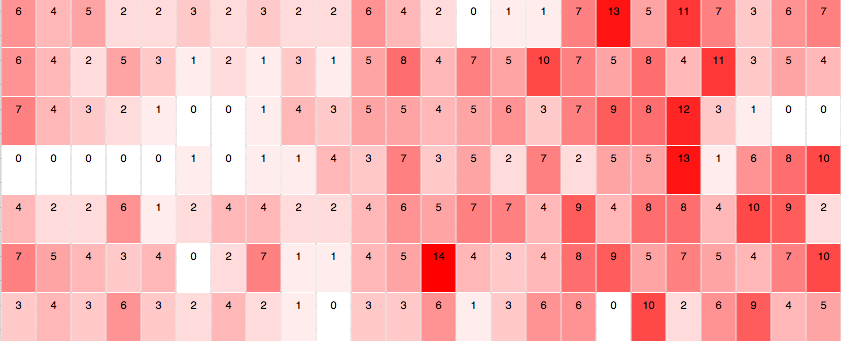
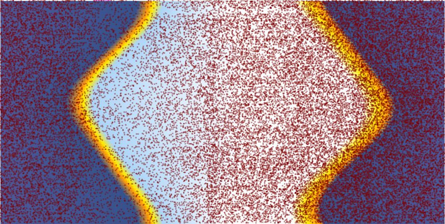

About HCDE 411
Team Members
Hu, Danni
danniphu@uw.edu
Lee, Po-shen
sephon@uw.edu
Raman, Chitra
cruwid@uw.edu
Rajpurohit, Shakti
shaktirp@uw.edu
Project Introduction
The purpose of this information visualization project is to analyze the various crime, accident and offence incident data provided by
the government of Seattle to do predictive analysis or preventive analysis on these incidents. Our target users are Seattle residents,
Law enforcements groups and other related parties. Our goal through this visualization project would be to help determine if there is a pattern
in the occurence of these incidents in terms of place, time, sunrise, sunset time, day and night length etc. We also want to provide pragmatic
and intuitive suggestions to the users through our visualization.
Scope of this project will not include:
- Determine the cause of the incident.
- Predict where the next incident might occur.
- Provide information of people/establishments involved in the incident.
- Average response time of the police department to the incident report categorized by area
Week Analyzer
How is the crime rate evolve in you area during specific period of time? Are they any weekly pattern of the crime on friday night?
Time Pattern Analyzer
Want to know how crime in your area is related to the length of day and night/sunset and sunrise?
